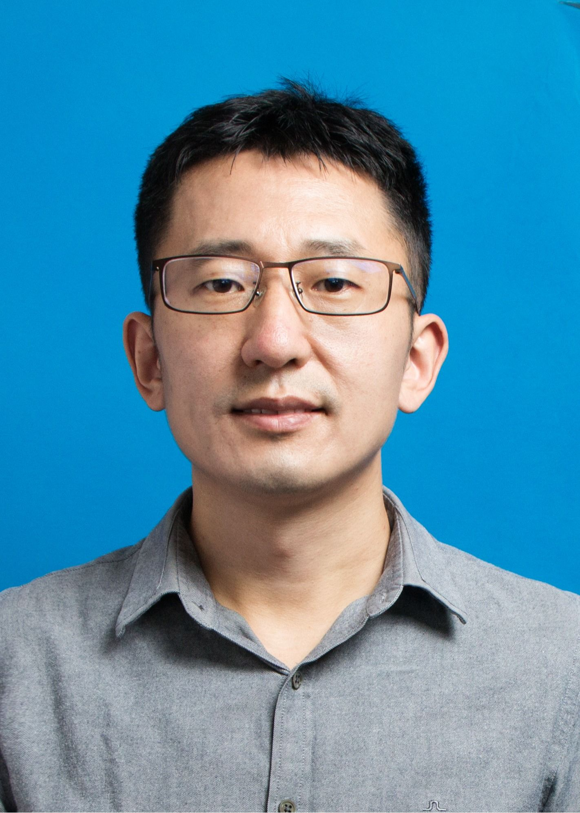
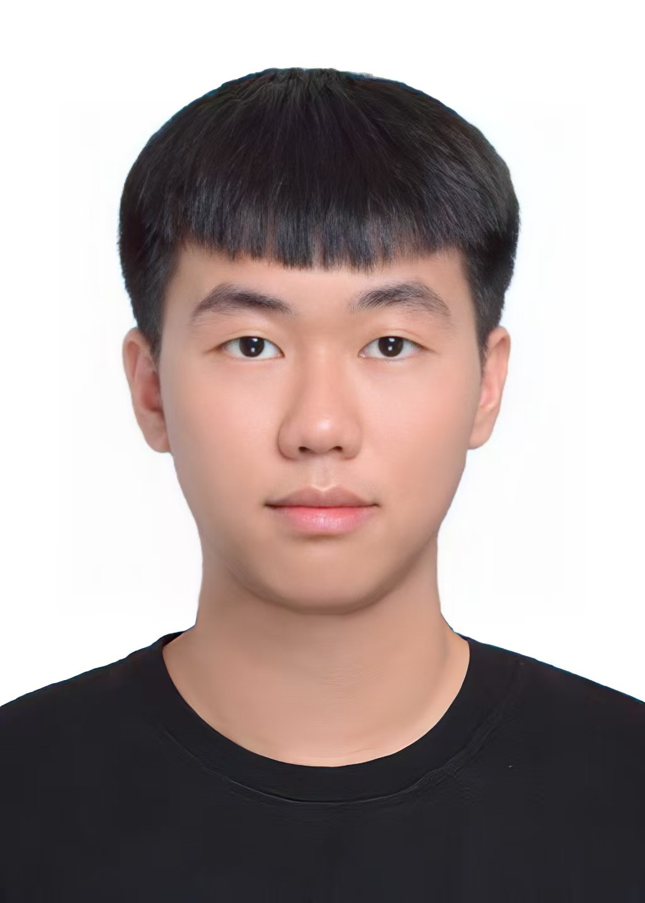
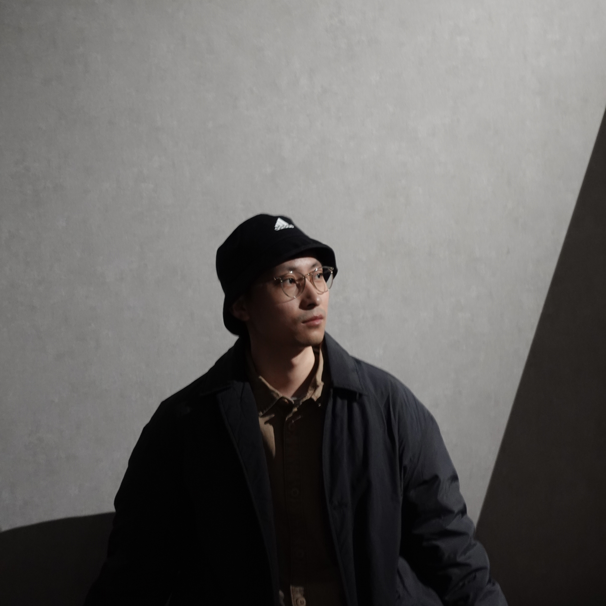
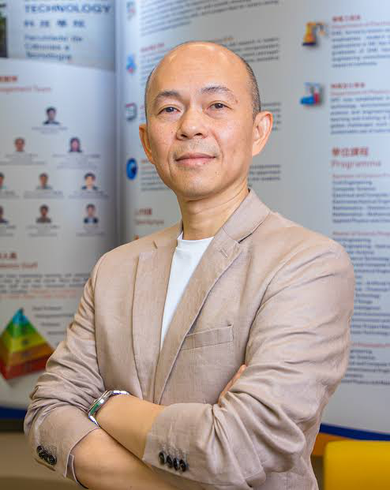

Organizers




Join the Program Committee
We welcome researchers working in areas related to the workshop to join our Program Committee.
Each reviewer will be assigned at most two papers. In the era of AI-assisted research, we aim to assign only one paper per reviewer whenever possible, reducing reviewing workload so that reviewers can provide careful, high-quality feedback.
If you are interested, please email your OpenReview profile link to aigctrustdetect@googlegroups.com. Applications will be reviewed by members of the organizing committee, and approved members will be listed on this page.
Program Committee Members
Confirmed members to date, listed alphabetically. The committee will grow to more than 50 members, so that every submission receives at least two reviews from Program Committee members and no reviewer is assigned more than two papers.
Program Committee members are required to have at least one first-author publication at ICML, ICLR, NeurIPS, a *CL venue, or another related top-tier conference or journal. Senior Program Committee members are experienced researchers in the field and make the final acceptance decisions.
Guangsheng Bao
Fuyao University of Science and Technology, Fuzhou, China
Xin Chen
Nanjing University, Nanjing, China
Yichao Du
Wuhan University, Wuhan, China
Xilin Gong
University of Georgia, Athens, Georgia, United States
Shudong Liu
University of Macau, Macao, China
Yefeng Liu
Ant Group, Hangzhou, China
Dawei Lu
Renmin University of China, Beijing, China
Xiaoxue Sun
Zhejiang University, Hangzhou, China
Longyue Wang
Alibaba Group, Hangzhou, China
Derek F. Wong
University of Macau, Macao, China
Junchao Wu
University of Macau, Macao, China
Zeyu Wu
University of Macau, Macao, China
Qishun Yang
China University of Petroleum, Karamay, China
Shu Yang
King Abdullah University of Science and Technology, Thuwal, Saudi Arabia
Xinyi Yang
Nanjing University, Nanjing, China
Xu Yang
University of Texas at Austin, Austin, Texas, United States
Runzhe Zhan
Nanyang Technological University, Singapore
Jiayi Zhang
Shanghai Jiaotong University, Shanghai, China